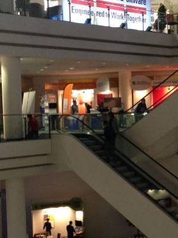

I’m quickly checking the planning for DOAG these 3 days and here is the list of sessions I would like to attend.
There are still a lot of interesting ones even if my choice is limited by the language (I would like to understand German but I’m limited so sessions in English). And I’ve still some concurrency issues to solve because I cannot be at two places at the same time.
There are some few flags in the DOAG planning that are misleading. For exemple, despites the fact that it is written German for my session, that’s unfortunatley impossible. It will be in English. But you can also hear it in German because it will be simulteanously translated as all sessions in the Tokyio and Shangai rooms. Don’t worry, my English is quite basic anyway.
Here is an excerpt from the conference planner about the sessions I would like to attend:
- Oracle GoldenGate 12c for Oracle Database 12c
Jagdev Dhillon Dienstag , 18.11.2014 – Istanbul 11:00 – 11:45
- Exploring and exploiting ASH data with maximum efficiency
Nicolas Jardot Dienstag , 18.11.2014 – Seoul 12:00 – 12:45
- What every DBA needs to know about JDBC connection pools
Jacco Landlust Dienstag , 18.11.2014 – Seoul 13:00 – 13:45
- When SQL_ID is Not Enough
Maris Elsins Dienstag , 18.11.2014 – Seoul 14:00 – 14:45
- Collaborative Design with Oracle SQL Developer Data Modeler
Heli Helskyaho Dienstag , 18.11.2014 – Shanghai 15:00 – 15:45
- Oak Table: Advanced RAC Programming Features
Martin Bach Dienstag , 18.11.2014 – St. Petersburg 15:00 – 15:45
- Wie kommt der Hint in das SQL, ohne die Anwendung zu Andern?
Mathias Zarick Dienstag , 18.11.2014 – Tokio 15:00 – 15:45
- Three in 12c: Row Limiting, PL/SQL WITH SQL and Temporal Validity
Christian Antognini Dienstag , 18.11.2014 – St. Petersburg 16:00 – 16:45
- Oracle Standard Edition Round Table
Philippe Fierens Dienstag , 18.11.2014 – Hongkong 17:00 – 17:45
- Oracle SQL Developer Tips and Tricks
Jeff Smith Dienstag , 18.11.2014 – Sydney 17:00 – 17:45
- Oak Table: A deep dive into HCC mechanics and internals
Martin Bach Mittwoch , 19.11.2014 – St. Petersburg 09:00 – 09:45
- My Favorite Oracle SQL Developer Data Modeler Features
Jeff Smith Mittwoch , 19.11.2014 – Shanghai 10:00 – 10:45
- Oak Table: Profiling the logwriter and databasewriter
Frits Hoogland Mittwoch , 19.11.2014 – St. Petersburg 10:00 – 10:45
- Oracle Database 12.1.0.2 New Performance Features
Christian Antognini Mittwoch , 19.11.2014 – St. Petersburg 11:00 – 11:45
- Calculating Basic Selectivity
Jonathan Lewis Mittwoch , 19.11.2014 – St. Petersburg 12:00 – 12:45
- Exploring Oracle 11g 12c Partitioning New Features and Best Practices
Ami Aharonovich Mittwoch , 19.11.2014 – Seoul 13:00 – 13:45
- Interpreting AWR reports – straight to the Goal
Franck Pachot Mittwoch , 19.11.2014 – Tokio 15:00 – 15:45
- Average Active Sessions (AAS): the key to performance tuning
Kyle Hailey Mittwoch , 19.11.2014 – Seoul 15:00 – 15:45
(yes I know I’ll not be able to attend as I’ve mine at the same time…)
- Performance monitoring in SQL*Plus using AWR and analytic functions
Marcin Przepiorowski Mittwoch , 19.11.2014 – Seoul 16:00 – 16:45
- Electronic Patients Records system based on Oracle Application Express
Jan Karremans Mittwoch , 19.11.2014 – Istanbul 17:00 – 17:45
- Utilizing new CBO features after upgrade to Oracle 12c – Practical example
Joze Senegacnik Mittwoch , 19.11.2014 – Seoul 17:00 – 17:45
- Practical ASH
David Kurtz Donnerstag, 20.11.2014 – St. Petersburg 09:00 – 09:45
- Calculating Join Selectivity
Jonathan Lewis Donnerstag, 20.11.2014 – St. Petersburg 10:00 – 10:45
- AWR Warehouse: Helping DBAs Make Sure History Never Repeats Itself
Jagan Athreya Donnerstag, 20.11.2014 – Tokio 14:00 – 14:45
- Best Practices in Managing Oracle RAC Performance in Real Time
Mark Scardina Donnerstag, 20.11.2014 – Tokio 15:00 – 15:45
- Demo Kino: Maximum Availability with Oracle Multitenant: Seeing Is Believing
Larry Carpenter Donnerstag, 20.11.2014 – Foyer Tokio 16:00 – 16:45
Besides that, don’t miss the RacAttack, RepAttack and CloneAttack where you can install on your laptop a RAC from scratch (2 virtualbox VM) a Dbvisit replication (two VM with Oracle XE and replicating Swingbench) and a demo appliance of data virtualization cloning with Delphix:
starts 10am #DOAG14 #RacAttack, #RepAttack, #CloneAttack Foyer Seoul/Shanghai Floor 3 (blue) http://t.co/wUIup78iG2 http://t.co/MvI1icZQAT
— Kyle Hailey (@kylehhailey) November 17, 2014
@kylehhailey I’m so excited about tuesday: teaching #RacAttack and learning #RepAttack at the same time. That’s optimization @ #DOAG2014
— Martin Berger (@martinberx) November 16, 2014
@martinberx I have notice that #RepAttack is just on Thursday (all day) with MySQL on Wednesday… @kylehhailey
— Jan Karremans (@johnnyq72) November 17, 2014
Have a nice DOAG, come to listen to our speakers and don’t forget to visit us at the Dbvisit booth on the second floor, just in front of the stairs:


{kind=link}